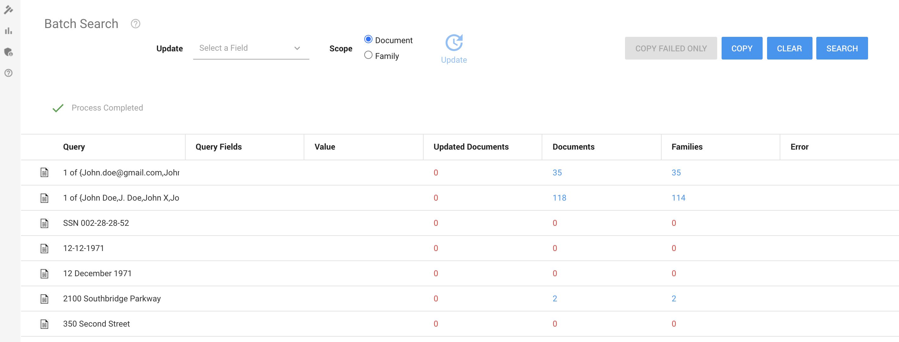

On the Home page, select Batch Search:

Open your data sheet (for example, a Word or Excel document) with queries you have created. For information on how to add your queries to a data sheet and assign values to them, see
Copy a selection of them.
Select the Batch Search section in ZyLAB ONE and paste your queries.

Values assigned to queries in your data sheet will be listed in the Value column.
Click Search to view the search results of each query.

Select the found documents of a query to view them in the result list.

Click Copy if you want to copy all information (queries, values, search results, etc.). You can paste this information in a new data sheet.

Click Copy Failed Only if you want to copy only information about the failed searches. Paste this information in a new data sheet to evaluate the queries.

Click Clear to remove all queries from ZyLAB One and start over again.